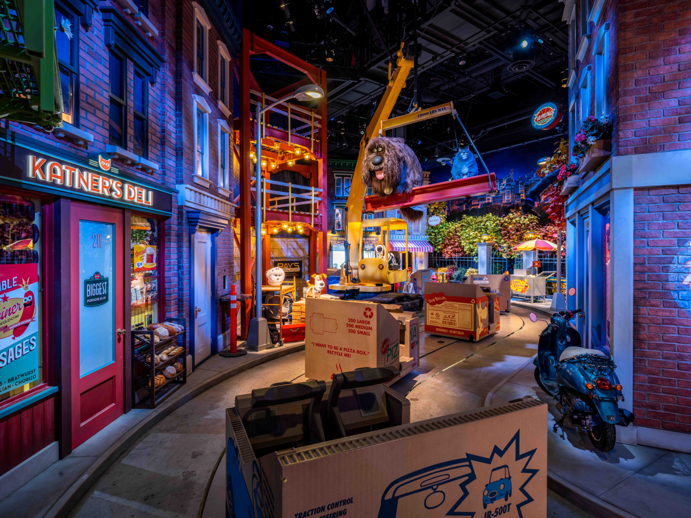
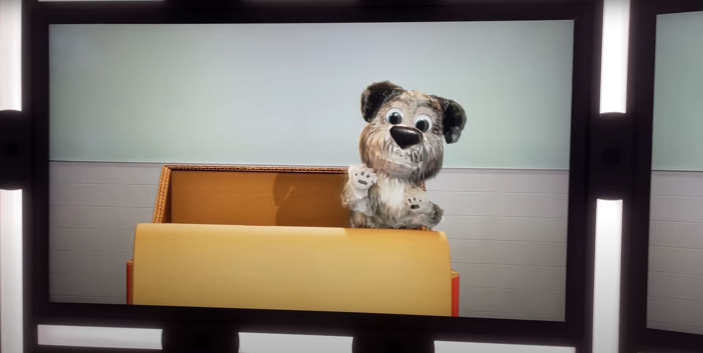
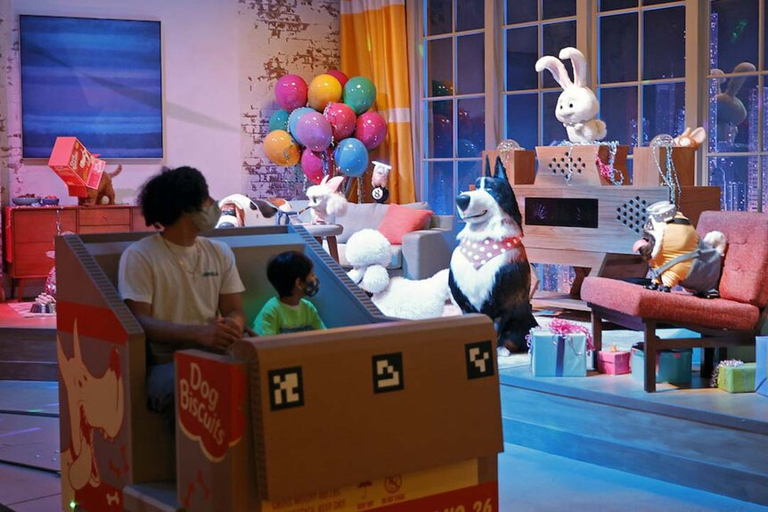

The Secret Life of Pets: Off The Leash attraction at Universal Studios Hollywood draws its inspiration from the heartwarming film "The Secret Life of Pets" by Illumination Entertainment. The experience takes guests on a gentle and immersive journey, as they ride along a slow-moving omni-mover ride system cleverly themed as cardboard boxes. This family-friendly dark ride is brought to life by an impressive array of over 60 animated figures, each contributing to the enchanting narrative. The story revolves around visitors becoming puppies themselves, joining in the delightful preparations for adoption day. At the culmination of this heartwarming adventure, guests are adopted by a loving family, and the pets throw a lively party to celebrate their new forever homes. It's an experience that captures the essence of the beloved film, inviting guests of all ages to immerse themselves in the world of pets and share in the joy of finding a loving family.

Ride Through POV
Prototypes
My contributions to the interactive puppy mirror effect at the Secret Life of Pets: Off The Leash attraction were a pivotal part of my role as a software engineer, marking the beginning of my journey with Universal Creative after my tenure as a technical coordinator working on Volcano Bay. In the prototype phase, I played a central role as the sole contributor responsible for securing approval of this captivating effect using the first prototype. The creative team provided me with their constraints and requirements for the desired effect, setting a challenging one-month deadline to deliver a full-scale mock-up. Leveraging my skills in Maya, I meticulously tailored the provided assets, including the creation of all necessary blend shapes. The prototype was received with enthusiasm, ultimately leading to the approval of the interactive puppy mirror effect. Throughout production, I continued to be a valuable contributor, collaborating with my colleague and good friend, Yu-Jen Lin, on subsequent prototypes requested for the attraction. Additionally, I served as a consultant for the project team during the production phase when the attraction was being brought to life by an external vendor.

Puppy Spa Mirror
Fiducial Tacking
To ensure the seamless operation of the interactive puppy mirror effect, we faced a unique challenge that required a distinct approach. The effect's timeline was intentionally offset from the rest of the ride, leading to misalignment with the requirements set by the ride team. To address this, we needed the interactive effect to function as a separate module, capable of independent tracking from the ride system. To achieve this level of independence, we leveraged fiducial markers, an ingenious solution that allowed us to assign a unique identifier to each ride vehicle. These markers not only ensured that each vehicle could be tracked individually but also provided a fail-safe mechanism. Even if a guest was not present or wasn't tracked for any reason, the fiducials offered the lowest level of tracking, maintaining the integrity of the experience and delivering a consistent, engaging interaction for all visitors.

Fiducials on the front of the ride vehicle
Facial + Skeletal Tracking
The tracking system for the puppy mirror interactive effect was designed with a singular goal in mind – to immerse guests in a the attraction by providing an experience where they could see themselves as adorable puppies. This captivating effect showcased a digital puppy avatar that guests could control with precision. Visitors had the ability to manipulate the puppy's arms, face, and even trigger charming gestures, such as panting, scratching their ear, or playfully hiding. What made this system truly innovative was its multi-stage activation, where a combination of face tracking, skeletal tracking, and general presence detection came together to provide guests with an exceptional level of control. This approach ensured that even guests with diverse physical abilities and characteristics, including those with limb differences, facial deformities, or facial coverings, could still enjoy a fully immersive experience. An unexpected yet welcomed side effect was that this approach remained functional even in the post-COVID era, accommodating guests wearing face masks, further enhancing inclusivity and engagement for everyone.
The Secret Life of Pets: Off The Leash was my inaugural project as an engineer, and it left an indelible mark on my journey. I was captivated by the unique challenges and considerations that themed entertainment interactive experiences present when compared to other mediums. This early exposure to the distinctive circumstances of this industry significantly shifted my mindset. It impressed upon me the importance of keeping all guests in mind, irrespective of their physical abilities or characteristics, when designing and developing new experiences. This shift in perspective was not only transformative but also resulted in a remarkable achievement – my very first patent, "Augmented Reality System for an Amusement Ride." The project not only marked the beginning of my career but also laid the foundation for my commitment to creating inclusive and engaging experiences within the world of themed entertainment.